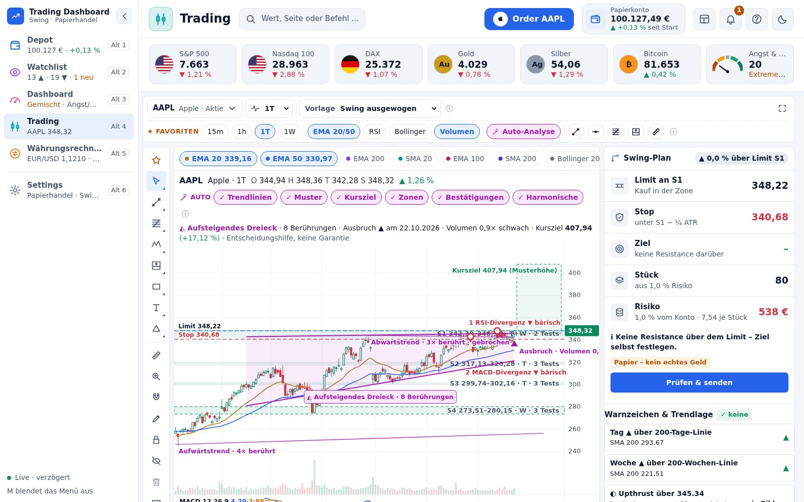
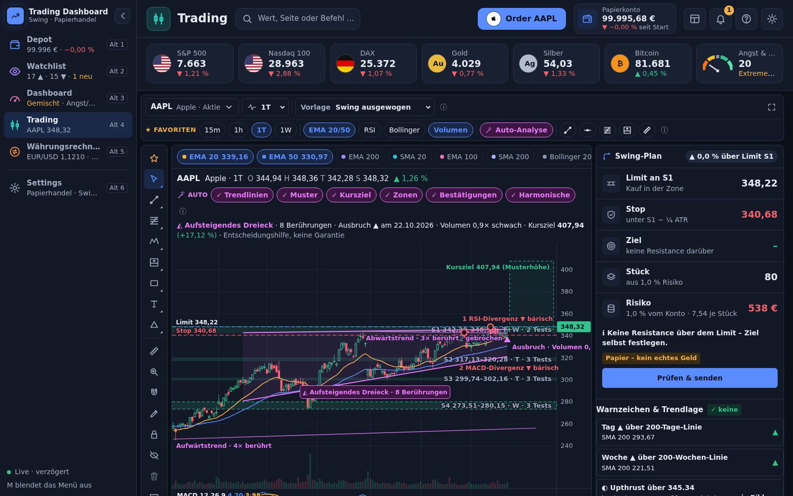

Trading
Chart, Swing-Plan, Order
- Auto-Analyse: Trendlinien, Dreiecke, Keile, Flaggen, Ausbruch mit Volumen
- Swing-Zonen aus Tag + Woche mit Plan: Limit, Stop, Ziel, Stückzahl aus 1 % Risiko
- Zeichenwerkzeuge mit Kürzeln wie TradingView, Order-Ticket